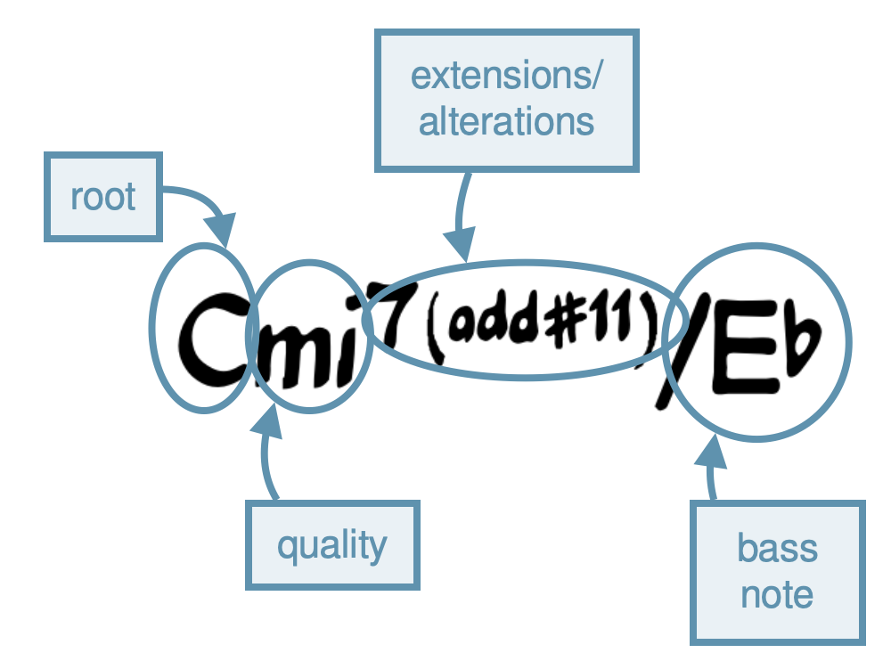
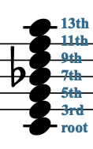
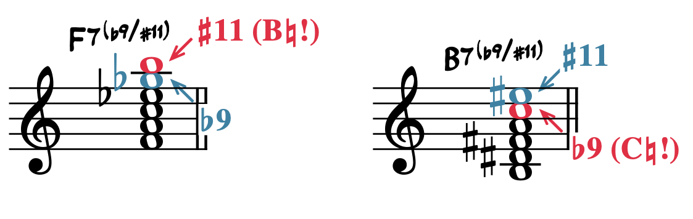
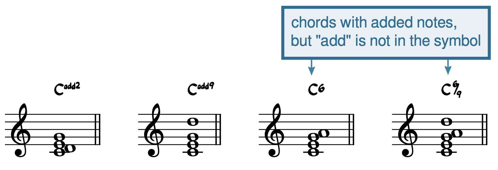

Open Music Theory：繁體中文版
和弦代號
{kind=link}

- root＝根音；
- quality＝三和弦性質；
- extensions/alterations＝延伸音／變化音；
- bass note＝低音。
- 原圖實際寫Cmi7(add♯11)/E♭，包含明寫的七音；
- 原始英文alt漏了7，中文依圖補正。
- add♯11在此加入F♯，不另外隱含九音；
- 七音已由7明確指定。
本書使用兩套和聲簡記方式：和弦代號與羅馬數字。和弦代號也稱為 lead sheet symbols，因為它們常出現在旋律和弦譜（lead sheet）上；這類爵士樂譜通常只記下旋律與和弦代號。
和弦代號能以少量字母容納許多資訊。例1用一個較複雜的代號，標出各個可能的組成部分。
查看英文原文
Key Takeaways
- Chord symbols tell you the root of the triad, the quality of the triad, any extensions to the triad, and any non-root bass note.
- Chord symbols don't reference a specific key. Instead, symbols are always assumed to be a certain quality unless otherwise indicated:
- Triads are assumed to be major.
- Sevenths added to the triad are assumed to be minor.
- All other extensions and added tones are assumed to be major/perfect.
- Alterations are shown through sharp and flat symbols, or through plus and minus symbols. Both systems are prevalent in the real world; when writing your own charts, pick one system and stick with it consistently. This textbook will use the sharp/flat system of showing alterations.
There are two systems of shorthand for discussing harmony used in this textbook: chord symbols and Roman numerals. Chord symbols are also sometimes called “lead sheet symbols” because you will find them on lead sheets, which are jazz scores that typically notate only a melody and these chord symbols.
Chord symbols can pack a lot of information into a few letters. A complex symbol is given in Example 1, with annotations to show the various possible components of a chord symbol.
三和弦
| 三和弦性質 | 和弦代號：以C為根音 |
|---|---|
| 大三和弦 | C |
| 小三和弦 | Cmi、Cm、C- |
| 減三和弦 | Co、Cdim、Cm(♭5)、Cm(-5) |
| 增三和弦 | C+、Caug |
例2。三和弦的和弦代號。
每種非大三和弦的性質，都有不只一種寫法。這是因為和弦代號隨爵士樂的發展逐漸形成，從未完全標準化。例2與例3沒有列出所有符號，但了解這些基本寫法後，通常就能推知其他變體。閱讀時應認識不同寫法，自己寫譜時則保持一套一致方式。例2與例3中，每列最先列出的符號，就是本書採用的寫法。
查看英文原文
Triads
Chord symbols are based on the major triad as the norm. If you see nothing but a note name as a chord symbol, this means to play a major triad. Other symbols are added to indicate other triad qualities, as summarized in Example 2.
| triad quality | chord symbol (for a chord with a root of C) |
|---|---|
| major | C |
| minor | Cmi, Cm, C- |
| diminished | Co, Cdim, Cm(♭5), Cm(-5) |
| augmented | C+, Caug |
Example 2. Chord symbols for triads.
Notice that there are several ways to represent each non-major triad quality. This is because chord symbols were created along the way as jazz developed and were never completely standardized. The symbols in Examples 2 and 3 are not comprehensive, but you can likely decode other variations based on the ones here. It's good to be aware of all the possible ways of representing these different triad qualities, but stick to one method for yourself. In Examples 2 and 3, the symbols used in this textbook are given first.
七和弦
三和弦最常加上的音，是根音上方的七音。做法是在根音名稱後，以上標寫阿拉伯數字7。
與三和弦相同，單獨的數字7也有預設性質：小七度。改變符號，就能標示其他可能，形成例3中的七和弦代號：
| 七和弦性質 | 和弦代號：以C為根音 |
|---|---|
| 屬七和弦 | C7 |
| 大七和弦 | Cma7、Cmaj7、C∆7 |
| 小七和弦 | Cmi7、Cm7、C-7 |
| 半減七和弦 | Cø7、Cm7♭5、C-7♭5 |
| 減七和弦 | Co7 |
例3。七和弦的和弦代號。
表中只列五種傳統七和弦性質；還有其他可能，例如 m(maj7)、aug7 等。這些表格不是完整清單；遇到陌生符號時，可以運用基本符號的知識，判讀它的意思。
查看英文原文
Seventh chords
The most common addition to a triad is the interval of a seventh. An added seventh is indicated with the Arabic number 7 written after the root, superscript.
As with the triad, the numeral 7 by itself indicates a default quality: a minor seventh. Alterations to the symbol indicate other possibilities, resulting in the seventh-chord symbols summarized in Example 3:
| seventh-chord quality | chord symbol (for a chord with a root of C) |
|---|---|
| dominant seventh chord | C7 |
| major seventh chord | Cma7, Cmaj7, C∆7 |
| minor seventh chord | Cmi7, Cm7, C-7 |
| half-diminished seventh chord | Cø7, Cm7♭5, C-7♭5 |
| diminished seventh chord | Co7 |
Example 3. Chord symbols for seventh chords.
This table only shows the five traditional seventh-chord qualities, but others are possible, such as m(maj7), aug7, and more. Again, these tables are not comprehensive, but when you encounter an unfamiliar symbol, you should be able to use your knowledge of basic symbols to figure out what it means.
低音
如果指定的低音不是根音，就在代號後加斜線，再寫低音音名。例如 C/E，表示以 E 為低音，演奏 C 大三和弦。
低音甚至不必是和弦音！C/F♯ 就是在 F♯ 低音上方，奏出 C 大三和弦。
查看英文原文
Bass notes
In much of jazz and pop, the bass note is the root of the chord. (Bassists may improvise around other notes, rather than strictly staying on the root of the chord, but this wouldn't affect how the harmony is written down.) For this reason, chord symbols are assumed to indicate root position chords unless otherwise indicated.
If the bass note should be something other than the root, this is shown with a slash followed by the letter name of the bass note. For example, C/E means to play a C major triad with an E in the bass.
Significantly, the bass note does not need to be a member of the chord! C/F♯ would indicate to play a C major triad over an F♯.
{kind=link}

圖中由下至上：root根音C、3rd三音E、5th五音G、7th七音B♭、9th九音D、11th十一音F、13th十三音A。
這是C13所隱含的音集合示意，不要求演奏時全部同時出現。
爵士和聲經常不只演奏代號明確寫出的音，還加入上方延伸音。延伸音這個名稱，來自將構成和弦的三度堆疊繼續向上延長的概念。七音是三和弦最常見的延伸，但爵士樂也常使用更高的音：在基本三和弦上繼續疊三度，就得到九音、十一音與十三音，見例4。
查看英文原文
Extensions
Jazz harmony often involves not only playing the notes explicitly indicated by the chord symbol, but also adding upper extensions. The term extension comes from the idea of extending the stack of thirds that creates harmonies. The seventh is the most common triadic extension, but jazz often makes use of higher extensions—stacking more and more thirds onto the basic triad results in the ninth, eleventh, and thirteenth (Example 4).
音程度數
九度、十一度與十三度，分別只是二度、四度與六度的複音程形式。那麼，為什麼要使用較不直觀的複音程度數，而不直接稱它們二度、四度、六度？有兩個原因：
查看英文原文
Interval size
You may notice that ninths, elevenths, and thirteenths are just compound versions of seconds, fourths, and sixth, respectively, so why use the more difficult-to-conceptualize compound intervals, instead of just calling these intervals seconds/fourths/sixths? There are two reasons:
- The presence of an extension in a chord symbol implies the presence of all other extensions below it as well. So, an eleventh chord is not just a triad plus the eleventh—it's a triad plus an eleventh, ninth, and seventh.[1]
- Extensions are often voiced (played) above the other chord members. In other words, in actual performed music, the extension really sounds a thirteenth above the root, not a sixth (for example).
延伸音的音程性質與變化
七度的預設性質雖然是小七度，其他延伸音與附加音卻預設為大音程，或完全音程：九度、十三度預設為大，十一度預設為完全。若無其他標記，例4的和弦就是 C13；它相對 C 的延伸音全是大音程或完全音程，只有七音 B♭ 構成小七度。
其他音程性質，以升、降記號將預設音高升高或降低半音。例如 C7(♯11) 包含根音上方的 F♯，也就是增十一度，取代原本預設的 F♮。
{kind=link}

- 左側F7(♭9/♯11)：♭9為G♭，♯11為B♮；
- 紅字特別標「♯11（B♮！）」。
- 右側B7(♭9/♯11)：♭9為C♮，♯11為E♯；
- 紅字標「♭9（C♮！）」。
因此符號升降的是預設音程，不保證實際音名帶同樣的升降記號。
括號內斜線分隔兩項變化，不是指定低音。
為求清楚，列出變化延伸音之前，先寫7。變化延伸音也常放在括號內，讓演奏者看清楚升降記號修飾的是延伸音，而非和弦根音。若同時有多個變化延伸音，也可用斜線分隔，如例5。
查看英文原文
Interval quality and alterations to extensions
While the default quality of the seventh is minor, extensions and additions are assumed to be major (ninths and thirteenths) or perfect (elevenths) unless otherwise indicated. The chord in Example 4, then, is simply a C13 chord: all the extensions are major/perfect intervals above C, except the seventh (B♭), which is minor.
Other interval qualities are shown with sharp and flat symbols that raise or lower the default pitch by a half step. So, a C7(♯11) chord would include an F♯ above the root—an augmented eleventh—instead of the typical F♮.
Note that in this context, these symbols are to be interpreted relatively. So, ♯11 really means "raise the eleventh" and ♭9 really means "lower the ninth"—as Example 5 shows, the altered note will not necessarily be a sharp or flat pitch. This is discussed more below under "Chord Symbols vs. Roman Numerals."
For clarity, always write "7" before listing altered extensions. Furthermore, altered extensions often placed in parentheses, so that a performer can easily see that the accidental is to be applied to the extension, not to the root of the chord. If multiple altered extensions are used, slashes might also be used to clearly delineate the alterations, as shown in Example 5.
add：附加音
{kind=link}

- 四組依序為Cadd2：C–D–E–G；
- Cadd9：C–E–G–D；
- C6：C–E–G–A；
- C6/9：C–E–G–A–D。
藍框「chords with added notes, but add is not in the symbol」＝這些和弦含附加音，但代號不寫add，指後兩組。
原圖的高低配置與符號保留。
若要加入某個音，卻不隱含它下方的七音，就在代號中寫 add。例如 Cadd9 是 C 大三和弦上方加入 D，不含七音，音為 C–E–G–D；相對地，C9 還隱含小七度，音為 C–E–G–B♭–D。也可以把附加音放在三和弦內部：Cadd2 表示 D 配在三和弦裡面，成為 C–D–E–G。
加入六音時，通常只寫6，不寫 add；例如 C 大三和弦加六音，寫成 C6。這種簡寫很常見，也合理：一方面，附加六音本來就很常用；另一方面，在這套代號語境中，不會與另一種必要解讀混淆。另一種常見用法，是同時加入六音與九音，也省略 add，例如 C[latex]^6_9[/latex]。
查看英文原文
add
To indicate that a note is added to a chord without implying a seventh underneath, the word "add" is written into the symbol. Cadd9, for example, is a C-major triad with a D voiced above the triad, but without any seventh: C–E–G–D. (Recall that C9 otherwise implies a minor seventh added to the C triad as well: C–E–G–B♭–D.) You can also add notes within a triad: Cadd2 indicates a C-major triad with an additional D that is voiced inside the triad: C–D–E–G.
In the case of an added sixth, we simply use the numeral 6 without “add”—for example, a C major triad with an added sixth is written as C6. There are two reasons why this is acceptable (and normal) shorthand: one, the added sixth is especially common, and two, there is no possible interpretation that one might confuse it with. Another common addition to triads is the sixth and ninth together, which is also indicated without the word "add": for example, C[latex]^6_9[/latex].
sus：掛留和弦
{kind=link}
三組都不含原本的三音E。
Csus預設以F取代E，Csus2以D取代E，C7sus則在Csus上加入小七度B♭。
7寫在sus之前，以免與表示替換音程的sus2混淆。
另一種變化是掛留和弦，縮寫 sus，表示以根音上方的另一個音取代三音，見例7。這個名稱來自常見的掛留：低音上方的四度解決到三度。因此，sus 和弦常接到同根音、沒有 sus 的和弦；但並不一定要這樣解決。
sus 預設以根音上方的完全四度取代三音。所以 Csus 的音是 C–F–G，原本 C 三和弦的 E 被 F 取代。
有時也會看到 sus2，表示以根音上方的大二度取代三音：Csus2＝C–D–G。
七和弦或延伸和弦含 sus 時，把 sus 寫在延伸音標記後面，例如 C7sus。這樣比較清楚，因為 Csus7 的外觀容易與 Csus2 混淆。
試試看
查看英文原文
sus
Another alteration is the suspended chord, abbreviated "sus," which indicates that the third of the chord should be replaced with another interval above the root (Example 6). The term comes from a common type of suspension, in which the fourth above the bass resolves to the third above the bass. Indeed, a sus chord will often be followed by a non-sus chord with the same root (though this is not required by any means).
The default assumption is that the third of the chord is replaced with a perfect fourth above the root. Csus, then, would yield the notes C–F–G—the E of the C triad is replaced with F.
Occasionally, you may see a sus2 chord, which replaces the third with the major second above the root (Csus2 = C–D–G).
To write the symbol for a seventh/extended chord with a suspension, the "sus" abbreviation comes after the extension, as in C7sus. This is for clarity's sake, since Csus7 might look too much like Csus2.
Try it!
Check and see if you understand chord symbols by taking out a sheet of scrap paper and notating the harmonies indicated by the chord symbols below. As you complete each chord, you can pull the slider to the right to reveal the correct answer.
You can also view and listen to the answer on Musescore.com.
和弦代號是絕對標記，羅馬數字則是相對標記。羅馬數字比較理論化、抽象，說明和弦相對於樂曲調性的所在位置；和弦代號則不依賴任何調，直接指定和弦的音高內容。判讀代號時，要暫時放下以樂曲調性為基準的思考：和弦代號不以調性為參照。
在許多情境中，比起較能表達分析含義的 A♭ma7(#5)，較簡單的 C/A♭ 反而更受偏好。和弦代號不是分析標記，而是樂譜的簡記方式；它的目的，是讓演奏者在正確時間找到正確的音。如果某個較少強調功能的寫法更容易閱讀，就可能採用它。例8就是如此：第二個和弦實際上可分析為 A♭ma7(#5)，對一般 A♭ 三和弦形成鄰音式裝飾；但 C/A♭ 可能更容易即時辨認，因此更合適。兩個符號沒有哪個永遠正確或錯誤，都能導向相同的音；較好的選擇取決於上下文。
例8。同樣一組音，可以有多種可接受的和弦代號；哪個更合適，取決於上下文。
記住這些差別，就更容易掌握和弦代號的邏輯。它們雖有許多變體，學會幾條基本規則，就能判讀各種符號。
媒體出處
- 和弦代號的構成（Lead sheet components），© Megan Lavengood，採 CC BY-SA 4.0：姓名標示—相同方式分享授權。
- 延伸音（Extensions），© Megan Lavengood，採 CC BY-SA 4.0：姓名標示—相同方式分享授權。
- 變化延伸音（Altered extensions），© Megan Lavengood，採 CC BY-SA 4.0：姓名標示—相同方式分享授權。
- 附加音（Added notes），© Megan Lavengood，採 CC BY-SA 4.0：姓名標示—相同方式分享授權。
- 掛留和弦（Sus chords），© Megan Lavengood，採 CC BY-SA 4.0：姓名標示—相同方式分享授權。
查看英文原文
Chord Symbols vs. Roman Numerals
It's important to understand that chord symbols are absolute labels, while Roman numerals are relative labels. Roman numerals are more theoretical and abstract, because they tell you the location of a chord relative to the key of the piece. Chord symbols, on the other hand, tell you exactly (absolutely) which notes are being played in this given chord, without reference to any key. It's important to leave the relative thinking behind temporarily when you interpret chord symbols. Chord symbols do not reference keys.
In many contexts, the simpler symbol C/A♭ is preferred to something more analytically descriptive, like A♭ma7(#5). Chord symbols are not analytical—they're a shorthand way of writing a score. In other words, the purpose of chord symbols is to get performers' fingers to the right notes at the right time. Chord symbols may represent things in a less functional sense if it means the symbol is easier to interpret. Example 8 is one such case: although the second chord really functions as an A♭ma7(#5) chord, neighboring to the regular A♭ triad, the symbol C/A♭ is probably easier to process and thus preferred. (However, neither symbol is inherently right or wrong all the time—both will result in the right notes being played, and the better choice depends on context.)
Example 8. There can be multiple accepted chord symbols to express the same notes. Which one is better depends on context.
Keeping these issues in mind helps in understanding the logic present in the system of chord symbols. Even though there is a lot of variation in chord symbols, learning a few rules will help you decipher any symbol.
- Chord symbols basics worksheet (.pdf, .mscz). Asks students to identify and write triads and seventh chords with chord symbols.
- Chord symbols with extensions (.pdf, .mscz). Asks students to identify and write extended chords with chord symbols.
Media Attributions
- Lead sheet components © Megan Lavengood is licensed under a CC BY-SA (Attribution ShareAlike) license
- Extensions © Megan Lavengood is licensed under a CC BY-SA (Attribution ShareAlike) license
- Altered extensions © Megan Lavengood is licensed under a CC BY-SA (Attribution ShareAlike) license
- Added notes © Megan Lavengood is licensed under a CC BY-SA (Attribution ShareAlike) license
- Sus chords © Megan Lavengood is licensed under a CC BY-SA (Attribution ShareAlike) license
- Although all the extensions below the highest extension are implied, they are not necessarily played. In fact, usually all the possible notes are not played, and some of the extensions between the highest and the seventh are omitted. The differences between what is notated, what is understood, and what is actually played are discussed more in the chapter on Jazz Voicings. ↵